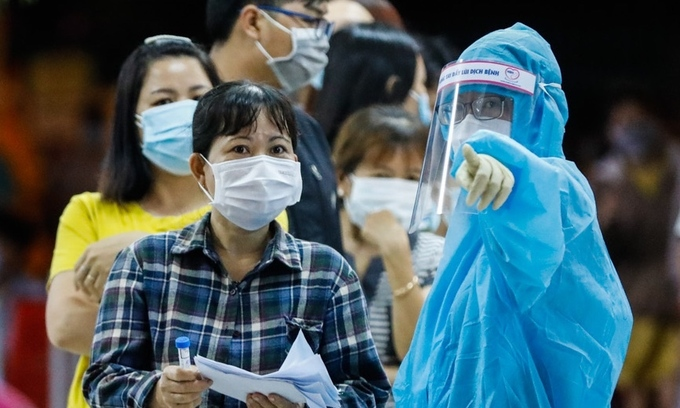

Số ca nhiểm ở TP HCM vượt 5.000
Với 714 ca nhiễm được công bố hôm 3/7, số ca bệnh tại TP HCM vượt 5.000 - đây là tình huống nghiêm trọng trong kịch bản ứng phó thành phố đặt ra vào giữa tháng 5. Thời điểm TP HCM xây dựng 3 kịch bản (dưới 100 ca; 1.000 ca; 5.000 ca) ứng phó Covid-19 trên địa bàn chỉ mới ghi nhận 3 ca nhiễm trong làn sóng Covid-19 lần thứ tư. Tuy nhiên, chỉ 45 ngày sau số ca nhiễm tại thành phố đã vượt 5.000 - tình huống nghiêm trọng nhất. Nhìn lại đợt dịch thứ tư, số ca nhiễm tại TP HCM tính theo ngày càng về sau càng tăng cao. Cụ thể, từ khi ghi nhận ca đầu tiên trong cộng đồng hôm 18/5, gần một tháng sau số bệnh nhân Covid-19 tại thành phố mới đạt 1.000 (ngày 16/6). Tuy nhiên, từ thời điểm đó số ca nhiễm trên địa bàn liên tục tăng và chỉ trong 18 ngày sau tăng thêm 4.437 ca bệnh, tức trung bình mỗi ngày ghi nhận hơn 246 ca. Ngày cao điểm nhất, TP HCM ghi nhận đến 724 ca (25/6).

Người dân xếp hàng chờ lấy mẫu xét nghiệm diện rộng tại quận Bình Tân hôm 22/6. Ảnh: Hữu Khoa.
Để đối phó dịch, ngay từ khi số ca Covid-19 trên địa bàn vượt 2.000 ca vào hôm 24/6 và đánh giá số ca nhiễm sẽ tiếp tục tăng, ngành y tế thành phố đã chuẩn bị kịch bản ứng phó trong tình huống xuất hiện 10.000 ca bệnh. Theo đó, ngoài 5.000 giường bệnh và 1.000 giường hồi sức ở các bệnh viện điều trị Covid-19 và các bệnh viện khác được tăng cường, TP HCM lập thêm 2 bệnh viện dã chiến để tiếp nhận, điều trị người mắc Covid-19 có quy mô 5.000 giường và xây dựng hệ thống điều Covid-19 theo mô hình "tháp 3 tầng". Hai cơ sở được chuyển đổi công năng là ký túc xá của Trung tâm Giáo dục Quốc phòng - An ninh sinh viên thuộc Đại học Quốc gia TP HCM quy mô 1.000 giường, địa chỉ tại phường Đông Hòa, TP Dĩ An, tỉnh Bình Dương. Cơ sở này trở thành Bệnh viện Dã chiến điều trị Covid-19 số 1. Cơ sở thứ 2 là ký túc xá Khu A, thuộc ký túc xá Đại học Quốc gia TP HCM, địa chỉ tại khu phố 6, phường Linh Trung, TP Thủ Đức, quy mô 4.000 giường. Cơ sở này trở thành Bệnh viện Dã chiến điều trị Covid-19 số 2. Các bệnh nhân không triệu chứng sẽ điều trị ở bệnh viện dã chiến. Những trường hợp triệu chứng nhẹ điều trị tại các bệnh viện vùng ven, như dã chiến Củ Chi, điều trị Covid-19 Củ Chi, điều trị Covid-19 Cần Giờ và hai cơ sở vừa được trưng dụng là Bệnh viện điều trị Covid-19 Bình Chánh và điều trị Covid-19 Thủ Đức. Bệnh nhân nặng sẽ điều trị tại các bệnh viện ở khu vực trung tâm thành phố như Bệnh Nhiệt đới, Phạm Ngọc Thạch, Trưng Vương. Đặc biệt, Bệnh viện Chợ Rẫy (thuộc Bộ Y tế) hỗ trợ 100 giường hồi sức điều trị các trường hợp nặng.

Bệnh viện Bệnh Nhiệt đới TP HCM - một trong cơ sở điều trị Covid-19 ở khu vực trung tâm. Ảnh: Hữu Khoa.
Đánh giá về tình hình dịch tại TP HCM, trong cuộc họp với Ban chỉ đạo chống Covid-19 của TP HCM hôm 2/7, Thứ trưởng Y tế Nguyễn Trường Sơn nói rằng "vẫn còn phức tạp, tính chất khó lường, nhất là về số lượng". Theo ông, 10 ngày qua các ca bệnh tại thành phố chưa có ngày nào dưới 3 con số. Gần đây số lượng ca nhiễm tăng nhanh, như hôm 1/7 ghi nhận 464 ca, trong đó 85 ca cộng đồng. Dịch không chỉ ở thành phố mà còn lan rộng ra Long An, Bình Dương, Đồng Nai; một số tỉnh xa như Tiền Giang, Đồng Tháp, Phú Yên, Quảng Ngãi... "Việc liên thông, giao lưu với các địa phương đặt ra tình huống cần lưu tâm là có thể dịch từ TP HCM, nhưng có thể lây lan ngược lại qua quá trình tiếp xúc", ông Sơn nói và cho rằng số ca nhiễm cộng đồng có xu hướng lây lan cao gây ra khó khăn cho thành phố trong triển khai các biện pháp phòng, chống Covid-19. Những ngày gần đây, số ca mắc mỗi ngày của thành phố tăng nhanh, chiếm phần lớn số ca cộng đồng trong ngày của cả nước. Các chuyên gia dự báo, số ca mắc tại TP HCM sẽ tiếp tục tăng trong những ngày tới do các yếu tố, bao gồm việc F1 được truy vết cách ly đến thời điểm phát bệnh; chiến lược xét nghiệm diện rộng toàn TP HCM với quy mô lớn... Trong ngày 3/7, Việt Nam ghi nhận thêm 914 ca trong nước. Trong đó có 792 ca được phát hiện ở khu cách ly hoặc khu đã được phong tỏa. Đây cũng là ngày ghi nhận số ca trong nước cao nhất từ khi dịch xuất hiện cách đây một năm rưỡi. Bắc Giang vẫn là địa phương ghi nhận nhiều ca nhiễm nhất với 5.710 ca; tiếp đó là TP HCM 5.437; Bắc Ninh 1.606 ca và Bình Dương 548 ca.